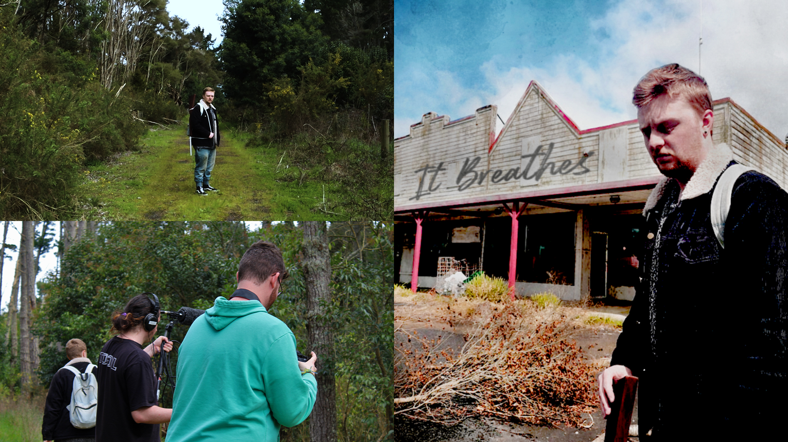

biography
Hey, I’m Sam Richards and I will soon graduate with a Bachelor of Design majoring in Media Design and minoring in Communication Design. I’ve had an interest in technology since I was a kid, but it wasn’t until college where I played around on Photoshop and created computer games that I realised I had this passion for design.
What I love about design is being able to take creativity and unleash it into something you can see visually and be proud of. Studying at The University of Waikato has opened the doorway into design and has introduced me to some amazing people and plenty of great opportunities. I found through my studies that I enjoy working with motion graphics and video editing. While my time studying is coming to a close, I see the endless journey of design that lays ahead for me.
project description
Inspired by the First Things First Manifesto 2020, it spawns our idea for the It Breathes Project which
consists of promotional content on social media pages for YouTube and Instagram, a website with a look
into the project from behind-the scenes and our short film, It Breathes.
Our project’s purpose is to have our viewers think about the decisions we all make and the outcomes that
follow, how our choices not only affect ourselves but the world around us - this is portrayed through
the post-modern dystopian world within our short film.
It Breathes Project

For more information contact us
Email: degreeshow@waikato.ac.nz
Faculty phone: 0800 924 528
Faculty information: cs.waikato.ac.nz